中国・オリジナルハイヴ内部1
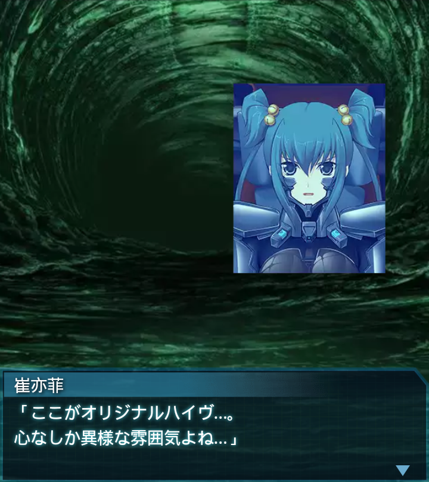
崔亦菲
「ここがオリジナルハイヴ…。
心なしか異様な雰囲気よね…」
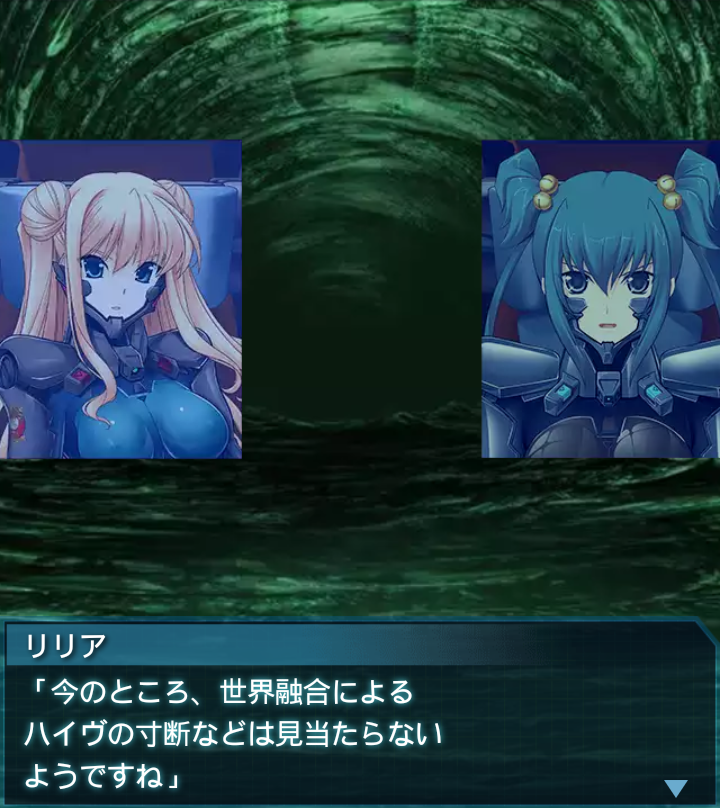
リリア
「今のところ、世界融合による
ハイヴの寸断などは見当たらない
ようですね」
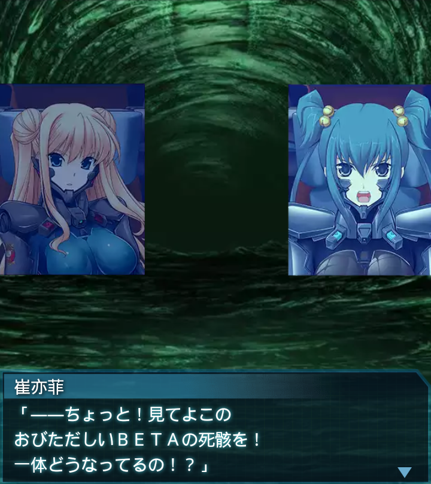
崔亦菲
「――ちょっと！見てよこの
おびただしいＢＥＴＡの死骸を！
一体どうなってるの！？」
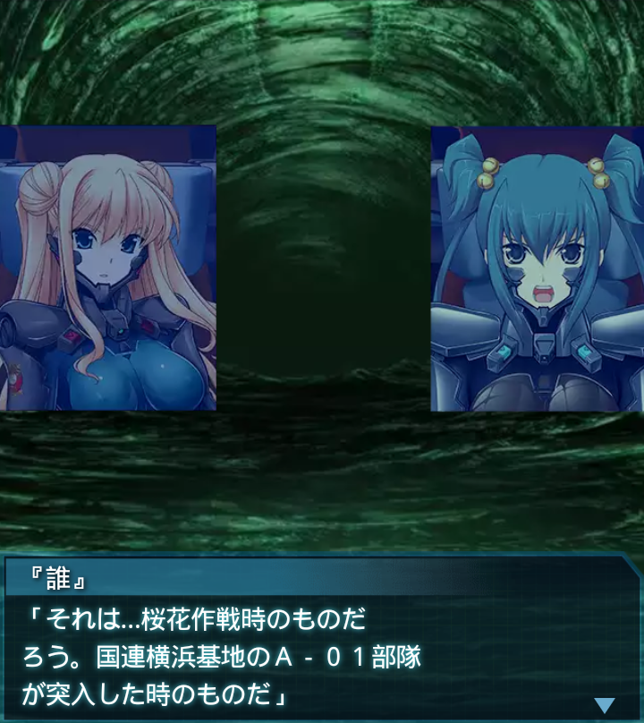
『誰』
「それは…桜花作戦時のものだ
ろう。国連横浜基地のＡ－０１部隊
が突入した時のものだ」
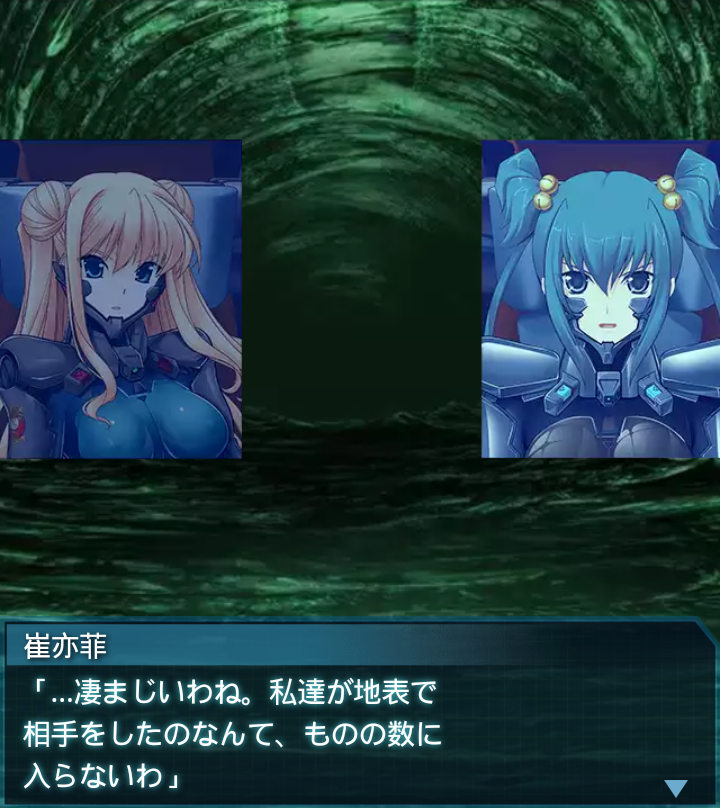
崔亦菲
「…凄まじいわね。私達が地表で
相手をしたのなんて、ものの数に
入らないわ」
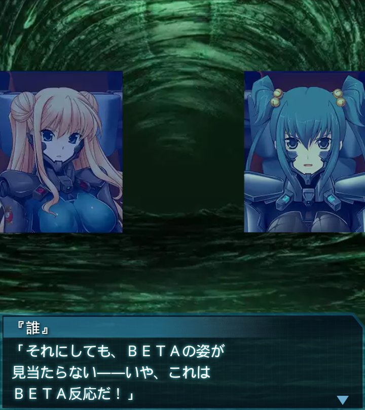
『誰』
「それにしても、ＢＥＴＡの姿が
見当たらない――いや、これは
ＢＥＴＡ反応だ！」
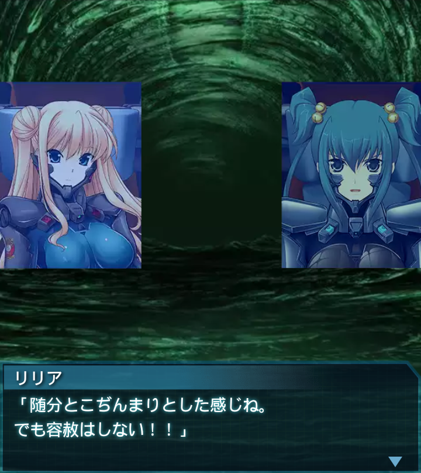
リリア
「随分とこぢんまりとした感じね。
でも容赦はしない！！」
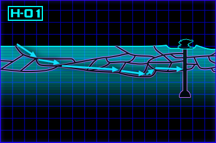
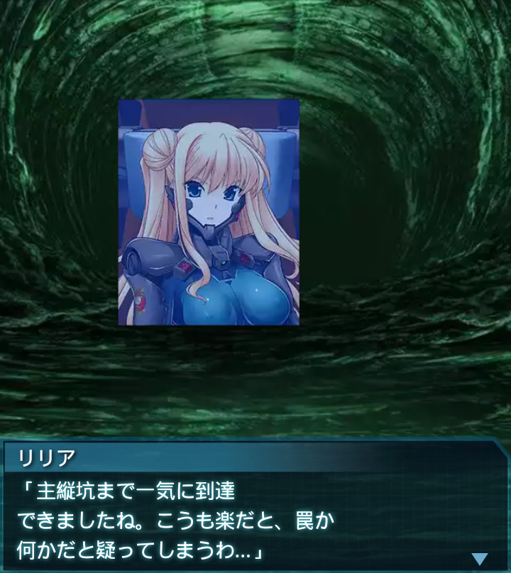
リリア
「主縦坑まで一気に到達
できましたね。こうも楽だと、罠か
何かだと疑ってしまうわ…」
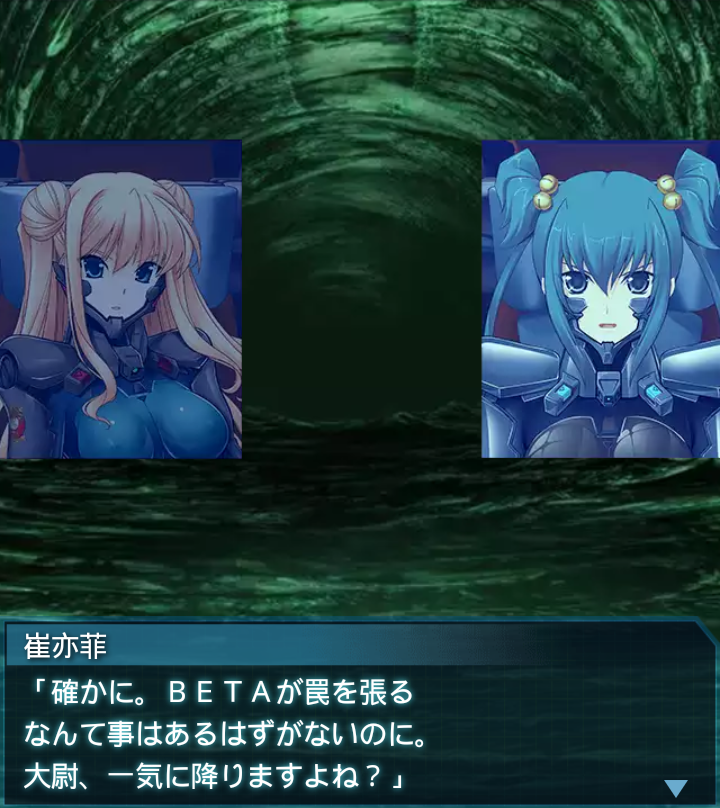
崔亦菲
「確かに。ＢＥＴＡが罠を張る
なんて事はあるはずがないのに。
大尉、一気に降りますよね？」
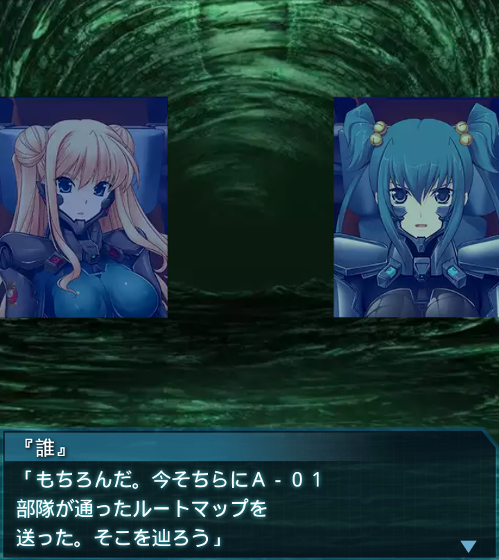
『誰』
「もちろんだ。今そちらにＡ－０１
部隊が通ったルートマップを
送った。そこを辿ろう」
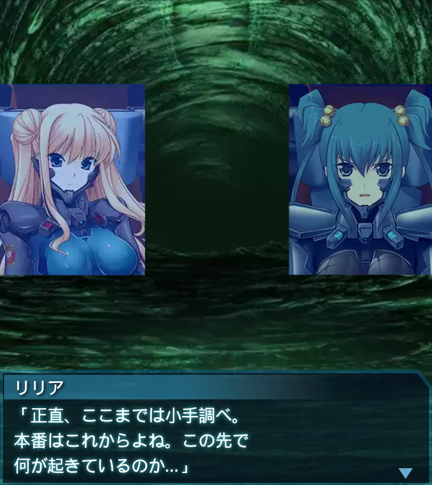
リリア
「正直、ここまでは小手調べ。
本番はこれからよね。この先で
何が起きているのか…」
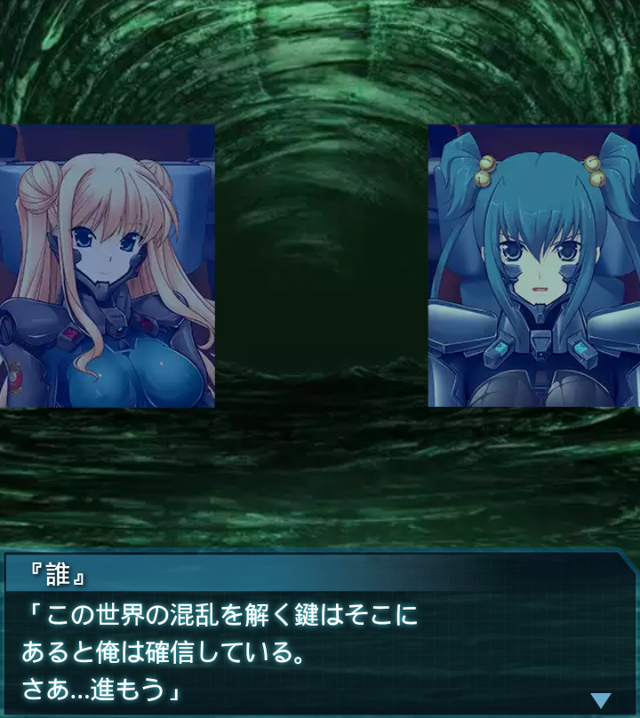
『誰』
「この世界の混乱を解く鍵はそこに
あると俺は確信している。
さあ…進もう」
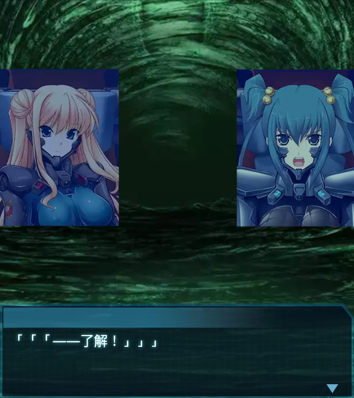
「「「――了解！」」」